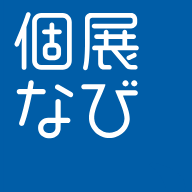

オフラインです
インターネットにつながっていません。通信できる場所で、もう一度お試しください。一度ご覧になったページは、オフラインでも見られることがあります。
LIAISON+ の取引の操作（購入の確定・会場売約済・発送の登録・お支払い・受取の確認など）は、通信できるときにだけ行えます。会場で作品が売れたときは、通信が戻ったらすぐに「会場売約済」にしてください。

インターネットにつながっていません。通信できる場所で、もう一度お試しください。一度ご覧になったページは、オフラインでも見られることがあります。
LIAISON+ の取引の操作（購入の確定・会場売約済・発送の登録・お支払い・受取の確認など）は、通信できるときにだけ行えます。会場で作品が売れたときは、通信が戻ったらすぐに「会場売約済」にしてください。